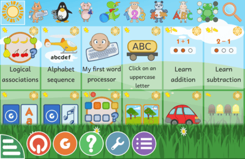
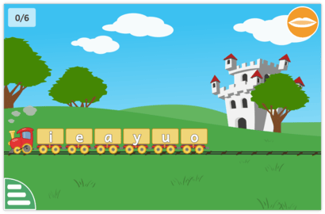

给三岁娃找启蒙软件，我装了这个开源项目
一个爸爸为刚会走路的儿子挑选屏幕时间工具，意外发现了这个横跨二十年、一百多个活动的儿童教育软件。
上周带娃去体检，医生说屏幕时间每天别超二十分钟。我本来想直接找几个抖音上的早教短视频凑凑——毕竟省心，结果翻到GCompris官网介绍的这个法国开源项目，看了两小时活动列表就停不下来，当天就装了。
第一眼：比预期朴素太多
装完双击打开，界面就是一排彩色图标平铺，顶部有个分类切换条，底部一条工具栏。说实话第一眼有点愣——这不像我见过的任何一款"儿童 App"，没有 splash 动画、没有会员弹窗、甚至连"关于"按钮都藏在底栏最角落。
但这个朴素感反而让我放心。给两岁多的孩子用的东西，界面元素越少越好。我顺手按了 Ctrl+F 全屏，再 Ctrl+B 把控制栏藏起来——屏幕上瞬间只剩活动图标，干干净净，我儿子第一反应是伸手去摸屏幕，而不是找"跳过"按钮。

Windows 上安装很顺，exe 双击下一步就行，没什么花里胡哨。不过GCompris下载页面上专门提醒了一句：如果黑屏或花屏，要用开始菜单里的 Safe Mode 启动——我显卡没问题没碰到这个，但这条细节让我对它的文档印象加分。
用了三天，挑两个活动说说真实感受
鼠标练习：比想象中练得多
我儿子刚会走路两个月，还没碰过电脑。第一个活动选的是鼠标练习——就是点按、擦除、拖拽这几个最基础的操作。
好的地方：活动把鼠标光标换成了一个小角色（好像是只企鹅？），点对了会有音效，错了也不会骂孩子，只是让你再来一次。声音是真·真人语音，不是那种合成电子音。我儿子现在听到那个"叮"的声音就回头看屏幕。
有点别扭的地方：拖拽活动的判定区域偏窄。孩子有时候拖到半松手了，活动就从头来，两三次之后他会有点急。我后来发现控制栏里有个"重复"图标，但得我自己先帮他拖对一遍，他才知道松手的时机。
认字母活动：声音是关键
阅读启蒙板块里有"点击一个小写字母"，玩法就是语音念一个字母，孩子在画面里点中它。
我本来以为这就是个很基础的听音辨形游戏，结果儿子玩了两天之后，自己在玩具上也开始念"B""C"了。这个活动对语音的依赖非常大——静音环境下根本玩不了，所以外放或耳机一定要先调好。
配套还有颜色识别活动，一星难度的那个很适合他当前阶段，进阶版的词汇量就大了，我试过让他玩进阶，蝴蝶飞得太快他追不上。

值得一提的细节
陪玩这几天，几个小地方让我觉得这个项目不只是个"软件"，更像一套真的有人在用、有人在改的东西。
没有进度保存的概念。活动内的级别会记住，但关软件重开就是重新开始——它根本不需要登录，也不需要账号体系，这一点我非常喜欢。没有数据收集，没有云端同步，软件就是软件，用完关掉就完事。
快捷键设计真的是给大人用的。陪玩的时候我三秒就能全屏、藏控制栏，孩子在旁边自己玩，我不用一路点菜单找选项。Ctrl+F 全屏、Ctrl+B 藏底栏，记住这对组合就够用。Ctrl+Q 退出整个软件——这个我自己按得比较多，收摊关机前最后一键。
星星标记是真的有用。每个活动左上角有难度星，一星黄、二星黄……最多我见过六星档。后来去GCompris文档翻了一下才明白，这个标记不是随便贴的——我一开始没注意，给儿子开了一个四星的数学活动，他根本看不懂，玩了五分钟就跑开了。后来老老实实按星星来，从一星二星开始，进度就顺多了。
适合谁，不适合谁
适合：两岁到八岁之间、家里有电脑、想让孩子有屏幕时间但又不想全是短视频的家庭。活动库覆盖面挺广的——鼠标键盘起步、阅读启蒙、数学闯关、益智棋类、甚至还有音乐和地理，一百多个活动够玩好一阵。
不太适合：特别想给孩子做"系统启蒙"的家长。它不是那种分章节、有课程进度的 App，活动之间相对独立，没有"学完这个才能学那个"的强约束。好处是自由，坏处是你得自己帮孩子挑。还有，中文翻译目前是部分翻译状态，个别活动说明会以英文显示，这个要有心理预期。
另外旧电脑用户也别担心——官网给了明确的版本对照表，Windows 7/8 装 4.3，XP 能装 15.10，经典活动都在。我家里还有台老笔记本，有空也装一下试试。
最后说一句
我儿子现在每天早上起来会指着电脑屏幕让我开"那个企鹅"。说实话我没想到一个开源项目能把"儿童教育"这件事做得这么扎实——没有广告、没有付费墙、没有会员等级，就是单纯的一百多个活动，一个真能让孩子坐下来玩二十分钟的工具。
周末我打算把数学板块也开几个，看看数数启蒙的活动怎么样。陪玩这件事，工具选对了，大人也能轻松不少。GCompris 作为开源项目，它的活动资料在 GitHub 上维护主分支，国内访问不方便的家长可以看 Gitee 和 GitCode 上的同步镜像。